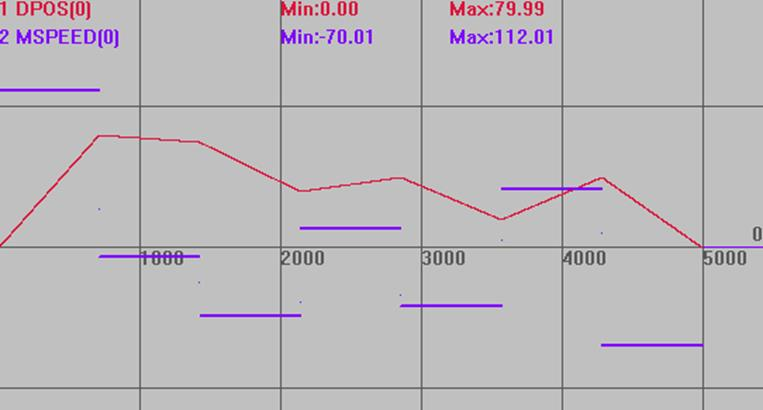
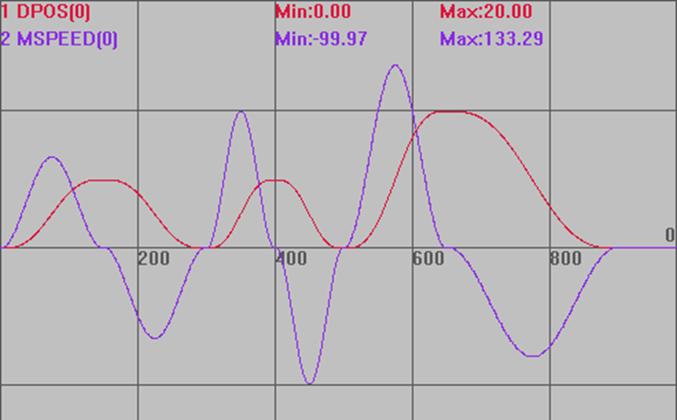
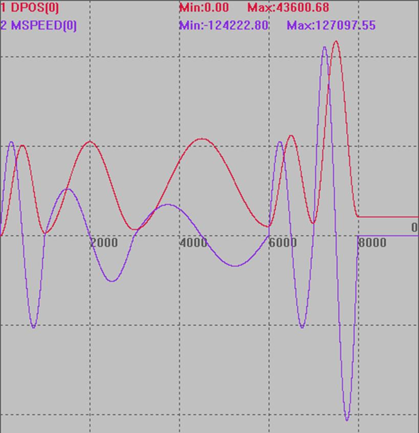

|
同步运动指令 | |
|
描述 |
CAM指令根据存储在TABLE中的数据来决定轴的运动，这些Table数据值对应运动轨迹的位置，是相对于运动起始点的绝对位置。
注：两个或多个CAM指令可以同时使用同一段TABLE数据区进行操作。 运动的总时间由设置速度和第四个参数决定，运动的实际速度根据TABLE轨迹与时间自动匹配。 TBALE数据需要手动设置，第一个数据为引导点，建议设为0。 TABLE数据*table multiplier这个比例=发出的脉冲数。
请确保指令传递的距离参数*units是整数个脉冲，否则出现浮点数会导致运动有细微误差。 |
|
语法 |
CAM(start point, end point, table multiplier, distance) start point：起始点TABLE编号，存储第一个点的位置 end point：结束点TABLE编号 table multiplier：位置乘以这个比例，一般设为脉冲当量值 distance：参考运动的距离 总时间=distance/轴speed |
|
适用控制器 |
通用 |
|
例子 |
例一： RAPIDSTOP(2) WAIT IDLE(0) BASE(0) UNITS=100 DPOS=0 ACCEL=1000 DECEL=1000 SPEED=100 TABLE(10,0,80,75,40,50,20,50,0) 'table从10开始存数据 TRIGGER '自动触发示波器 CAM(10,17,100,500) '运动轨迹为table10到17，运动总时间为500/100=5s
轨迹与速度 DPOS(0)垂直刻度100 MSPEED(0)垂直刻度100 
例二：CAM在高速高精度运动上的应用 DIM num_p,scale,m,t '变量定义 num_p=100 scale=500 FOR p=0 TO num_p TABLE(p,((-SIN(PI*2*p/num_p)/(PI*2))+p/num_p)*scale) 'table存储凸轮表运动参数 NEXT RAPIDSTOP(2) WAIT IDLE(0) BASE(0) '选择轴0 DEFPOS(0) SERVO=ON UNITS=500 SPEED=1000 ACCEL=1000000 DECEL=1000000 TRIGGER
m=10 '代表距离的倍数 t=0.3 '运行时间 SPEED=1000 CAM(0,100,m,SPEED*t) WAIT IDLE
m=10 t=0.3 SPEED=1000 CAM(0,100,-m,SPEED*t) WAIT IDLE
m=10 t=0.2 SPEED=500 CAM(0,100,m,SPEED*t) WAIT IDLE
m=10 t=0.2 SPEED=500 CAM(0,100,-m,SPEED*t) WAIT IDLE
m=20 t=0.3 SPEED=1000 CAM(0,100,m,SPEED*t) WAIT IDLE
m=20 t=0.5 SPEED=500 CAM(0,100,-m,SPEED*t) WAIT IDLE
插补轨迹 DPOS(0)垂直刻度20 MSPEED(0)垂直刻度100 
例三：连续凸轮 RAPIDSTOP(2) WAIT IDLE(0) BASE(0) UNITS=100 DPOS=0 ACCEL=1000 DECEL=1000 SPEED=100
DIM rad,x,deg FOR deg= 0 TO 360 STEP 1 '构造0-360度的凸轮数据 rad = deg * 2 * PI / 360 x = deg * 2 + 10000 * ( 1 - COS (rad)) TABLE (deg ,x) print deg,x NEXT deg
TRIGGER '自动触发示波器 CAM(0,360,100,100) '运动轨迹为table 0到360，运动总时间为100/100=1s CAM(0,360,100,200) '运动轨迹为table 0到360，运动总时间为200/100=2s CAM(0,360,100,300) '运动轨迹为table 0到360，运动总时间为300/100=3s WAIT UNTIL REMAIN_BUFFER(1) > 0 '等待缓冲空间空了再存运动指令 CAM(0,360,100,100) '运动轨迹为table 0到360，运动距离为100*table数据/units(0) CAM(0,360,200,100) '运动轨迹为table 0到360，运动总时间200*table数据/units(0)
DPOS(0)垂直刻度20000 MSPEED(0)垂直刻度60000  |
|
相关指令 |